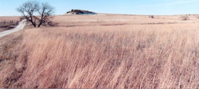

|

Rangelands are defined as any large expanse of land that provides suitable grazing for livestock and wildlife, and is not fertilized, cultivated, or irrigated. The natural vegetation of rangelands is dominated by native grasses, grass-like plants, forbs, and shrubs. When rangelands are properly managed, the land's soil, water, vegetation, and grazing animals function together as integral components of a natural ecosystem. Rangelands are sometimes referred to as either ranch-lands, grasslands, native grazing lands, shrublands, deserts, plains, savannas, or prairies. Rangelands are a type of land that supports life and are an essential component of Earth's water, nutrient, and energy cycles. They are important to all people, both rural and urban alike. Examples of ecosystem goods and services that rangelands provide for the benefit of society include:
Rangelands are important to society because, when healthy, they play a small but important role in regulating our planet's climate. They also play an important role in mitigating and deferring long-term climate change, thereby minimizing the negative effects of man-made global warming on society. About 50% of the land surface of the United States and a significant portion of the land surface of Canada and Mexico are classified as rangelands. Rangelands found in North America include the prairies and savannas on the Great Plains and the natural wetlands of the United States, Canada, and Mexico. Other examples of rangelands are the
Rangelands occur in every region of North America and are the dominant type of land in arid and semiarid regions. For example, nearly 80% of the lands in the West are classified as rangelands, whereas only 7% of some areas near the East Coast are classified as rangelands. In Texas, rangelands are found in the following geographic regions:
Rangelands of the United States, Canada, Mexico and other countries around the world are under tremendous pressure to provide healthy food, natural fiber, fresh water, breathable air, and other ecosystem goods and services to about 80 million additional people every year. Because rangelands occupy about 80% of our planet's land surface, their management and health is linked closely to the quality of life and survival of all people around the world. http://www.texasranchingconservancy.com/rangeland.html |